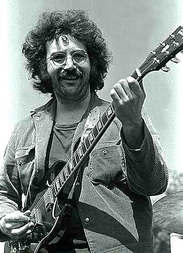
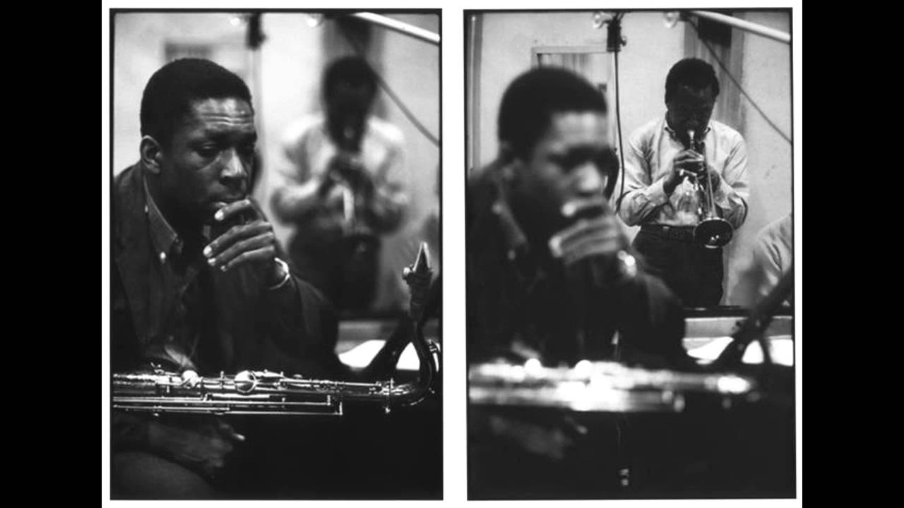
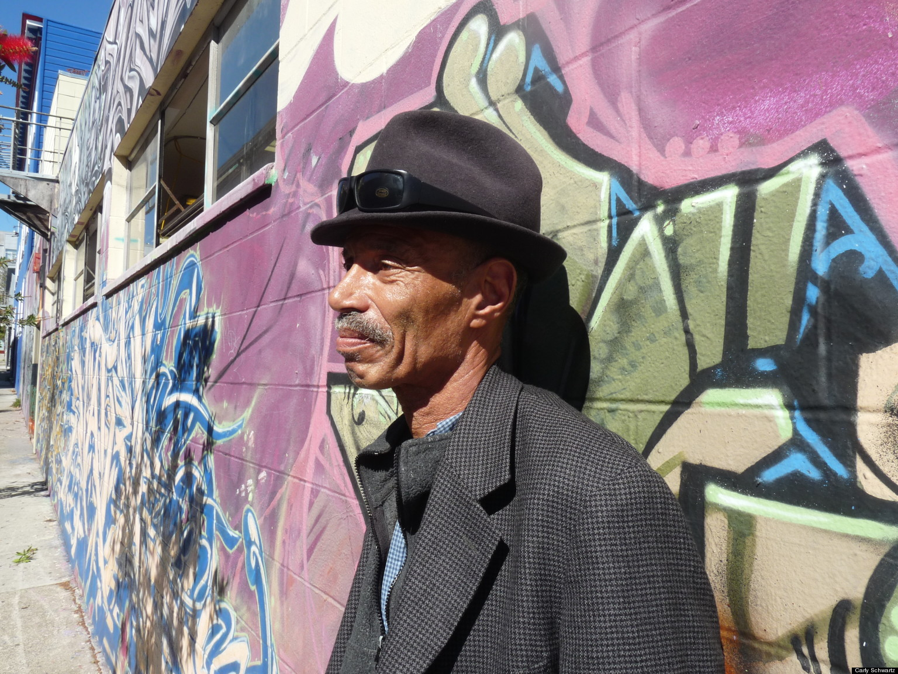
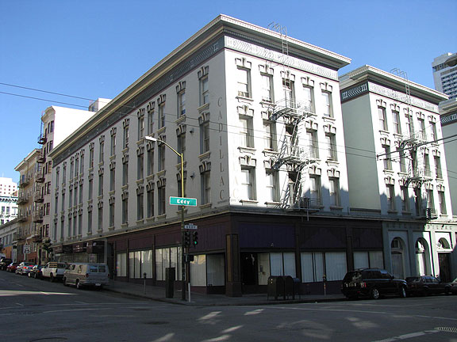
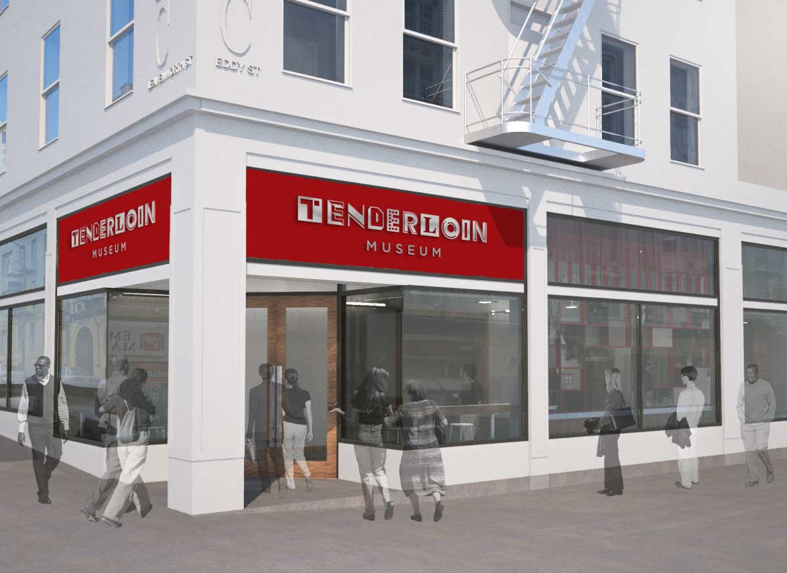
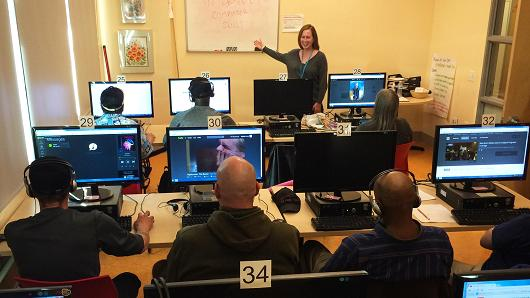
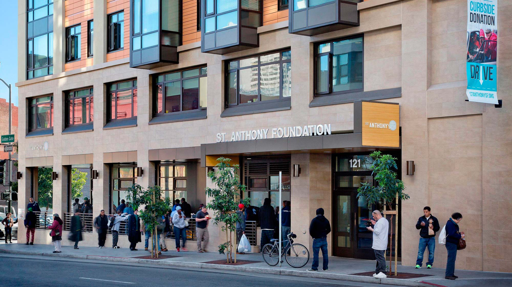
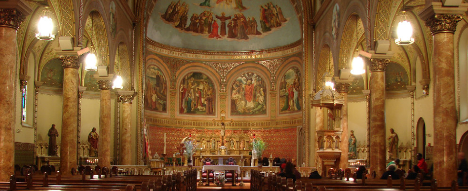
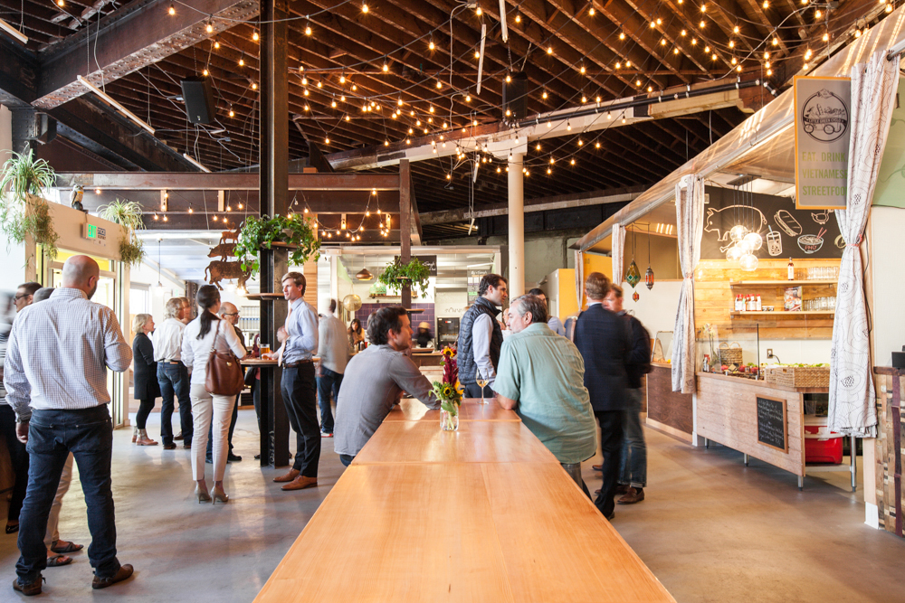

PLACES AND FIGURES
PEOPLE
JERRY GARCIA
Jerry Garcia was an iconic musician and a member of the Grateful Dead who lived in the Cadillac hotel.

source: town topics
JOHN COLTRANE AND MILES DAVIS
John Coltrane and Miles Davis were jazz musicians who recorded live albums in the Tenderloin.

souce: songbook
DEL SEYMOUR
Del Seymour is an important figure who helped shape the Tenderloin into what it is today. He is known as the "mayor" of the Tenderloin and hosts community walking tours and has started his own project, Code Tenderloin, which offers classes to help people get jobs.

source: Huffington Post
PLACES
THE CADILLAC HOTEL
The Cadillac Hotel was the first nonprofit single residence occupancy hotel west of the Mississippi. The Cadillac Hotel has provided affordable housing for those who cannot afford the expensive San Francisco rent.

source: FoundSF
TENDERLOIN MUSEUM
The Tenderloin Museum has a permanant collection of art, a local artist exhibition, a museum store, and provides neighborhood walking tours.

source: SF travel
TENDERLOIN TECH LAB
The Tenderloin tech lab is a center for locals to improve their tech skills through classes and recreational use.

source: Tenderloin Technology Lab
ST ANTHONY'S FOOD HALL
St Anthony's food hall is a food hall that serves food daily to people who cannot afford their own meals. They have been catering to Tenderloin locals for six decades and have served over 42 million meals.

source: Nibbi Brothers General Contractors
ST BONIFACE CATHOLIC CHURCH
St Boniface Catholic church is a church welcome to the homeless as a place for shelter.

source: St Boniface SF
THE HALL
The Hall is a restaurant venue that targets new businesses as a way to help startups experience the restaurant industry before making the full commitment.

source: warhorse